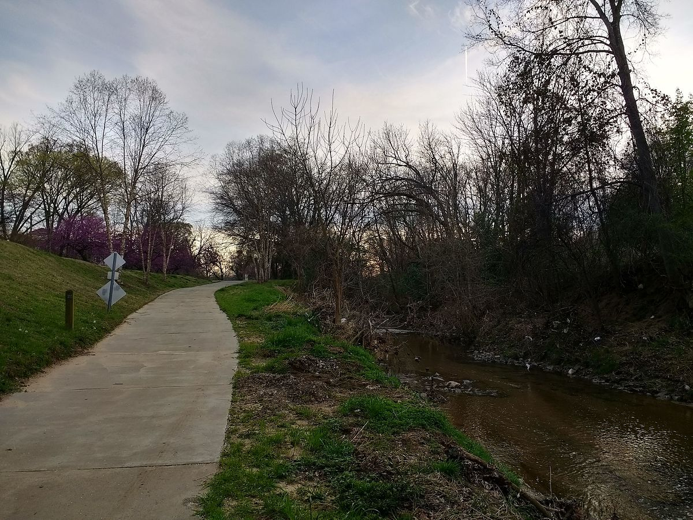

This page shows off my hobbies and interests!
Some of my hobbies are:
- Binge watching Star Wars. Did you want to see my watching order?
- Brewing beer with friends
- Visiting my local brewery. Did you want to see my favorite breweries in Charlotte?
Some of my interests are:
- Playing video games. Here's a link to my steam profile.
- Being a foodie. Here's a link to my favorite restaurants.
- Running on the greenways in Charlotte!
Irwin Creek Greenway in Charlotte, NC

My Star Wars watching order:
- Rouge One (2016)
- A New Hope (1977)
- The Empire Strikes Back (1980)
- The Return of the Jedi (1983)
- The Phantom Menance (1999)
- The Attack of the Clones (2002)
- Star Wars: The Clone Wars (2008)
- The Revenge of the Sith (2005)
- The Force Awakens (2015)
- The Last Jedi (2017)
- The Rise of Skywalker (2019)
My favorite breweries in Charlotte, NC:
- Wooden Robot Brewery
- Town Brewing Company
- Pilot Brewing Compnay
- Petty Theives Brewing
- Lower Left Brewing Company
- Devil's Logic Brewing
- Resident Culture Brewing
- Birdsong Brewing
- Triple C Brewing
- Lenny Boy Brewing Co